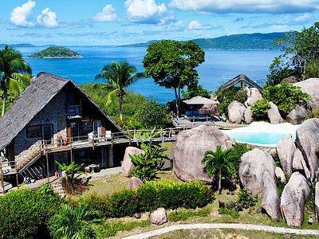

HERE ARE SOME AMAZING PICTURES AND VIDEOS OF THESE COUNTRIES
- SEYCHELLES
- NAMIBIA

The Seychelles is an archipelago of 115 islands in the Indian Ocean, off East Africa. It's home to numerous beaches, coral reefs and nature reserves, as well as rare animals such as giant Aldabra tortoises. Mahé, a hub for visiting the other islands, is home to capital Victoria. It also has the mountain rainforests of Morne Seychellois National Park and beaches,
including Beau Vallon and Anse Takamaka .
Namibia, a country in southwest Africa, is distinguished by the Namib Desert along its Atlantic Ocean coast. The country is home to diverse wildlife, including a significant cheetah population. The capital, Windhoek, and coastal town Swakopmund contain German colonial-era buildings such as Windhoek's Christuskirche, built in 1907.
In the north, Etosha National Park’s salt pan draws game including rhinos and giraffes.
Here is a video show casing how beautiful namibia is..